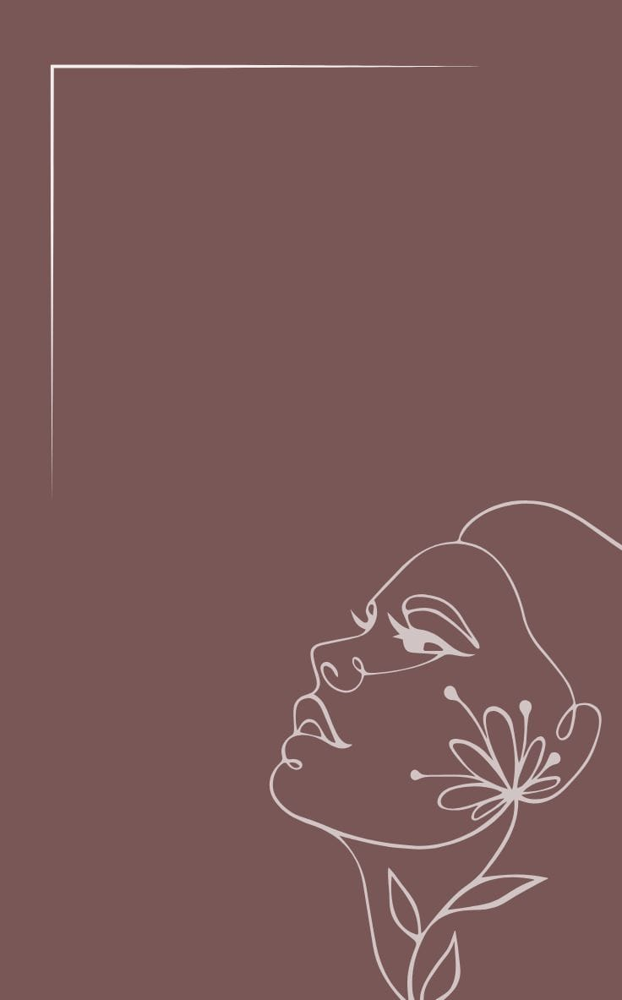
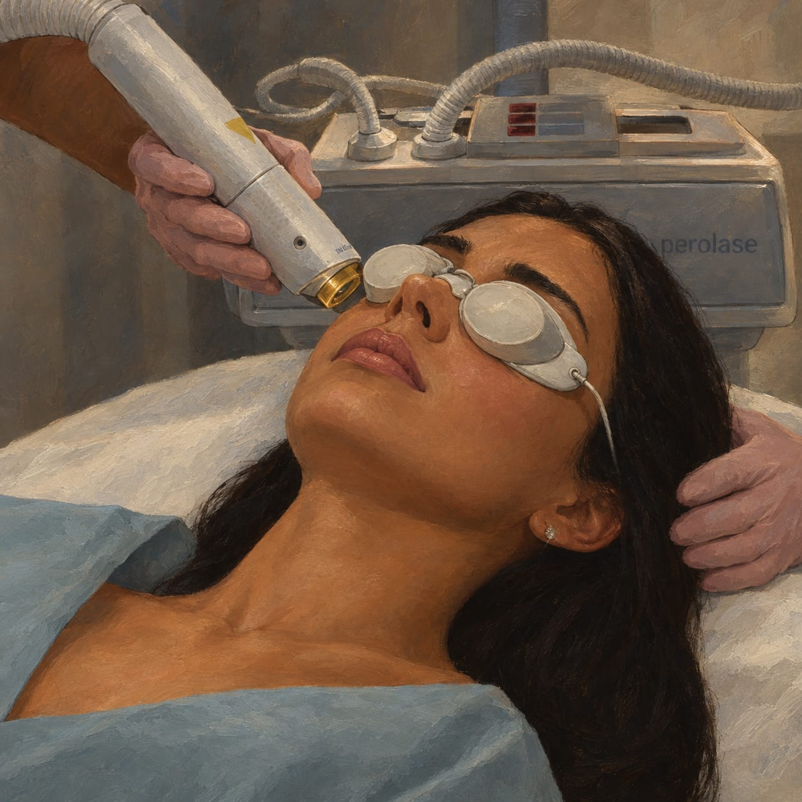
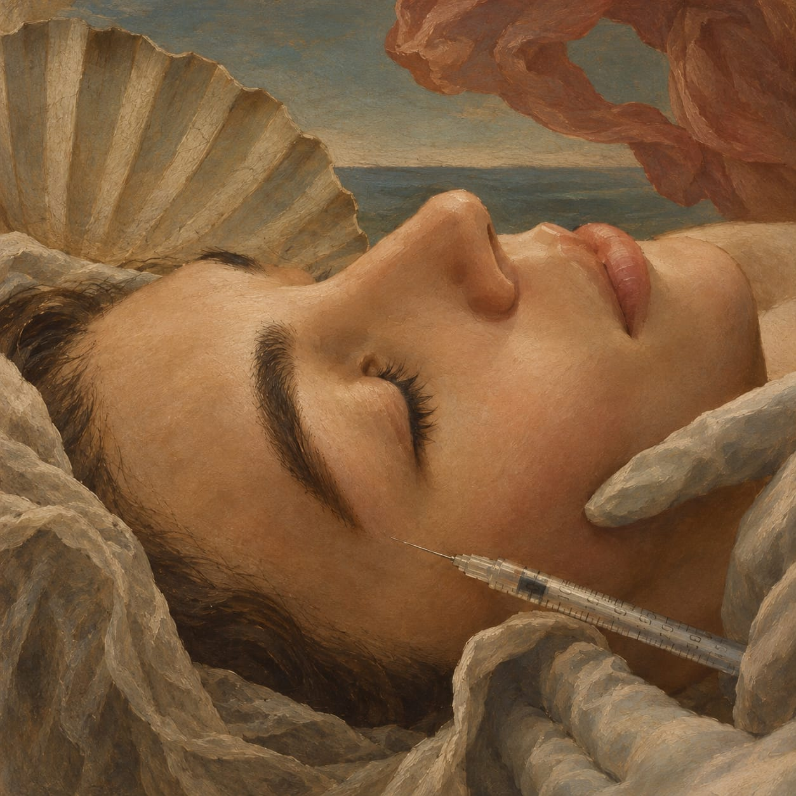

Aos 14, 30, 50 ou 70+. Cada fase traz novas histórias e necessidades. Na Divina, não buscamos padrões irreais: oferecemos o acolhimento e a orientação precisa para você cuidar de si sem perder sua identidade.

A Divina nasceu de um incômodo simples: ver a estética moderna se transformar em uma linha de montagem de rostos e corpos iguais.
Acreditamos que você não precisa perseguir um ideal estético desenhado para outra pessoa. Você precisa de um espaço seguro, silencioso e acolhedor, onde suas queixas sejam ouvidas com atenção e técnica.
"Aos 14, aos 30, aos 50, aos 70 ou aos 90. Cada fase traz necessidades únicas. Cada mulher traz uma história única."
Substituímos a pressão da venda rápida por um protocolo transparente focado no seu bem-estar a longo prazo.
Antes de olhar para a pele, ouvimos o que você sente ao olhar no espelho e quais são suas reais prioridades.
Análise minuciosa da anatomia e saúde da pele para identificar o que possui indicação profissional real.
Construção de um plano de cuidados gradual e consciente, respeitando suas vontades e limites.
Você não passa pelo processo sozinha. Mantemos suporte e acompanhamento constante pós-atendimento.
Não existe um procedimento universalmente melhor. Existe o tratamento adequado para o seu objetivo — quando houver indicação técnica.
Suavização de marcas de expressão dinâmicas para prevenir vincos profundos, preservando a sua movimentação facial natural.

Estímulo térmico que auxilia no combate à flacidez e melhora a firmeza e textura da pele facial e corporal.

Tratamento que ativa a produção natural de colágeno do próprio organismo, devolvendo a densidade e a sustentação cutânea.
Aplicação direcionada para o auxílio na redução de gordura localizada em regiões pontuais do corpo.
Conte-nos o que você gostaria de cuidar. Nossa avaliação é o ponto de partida para um cuidado feito sob medida.
Agendar minha avaliação pelo WhatsApp